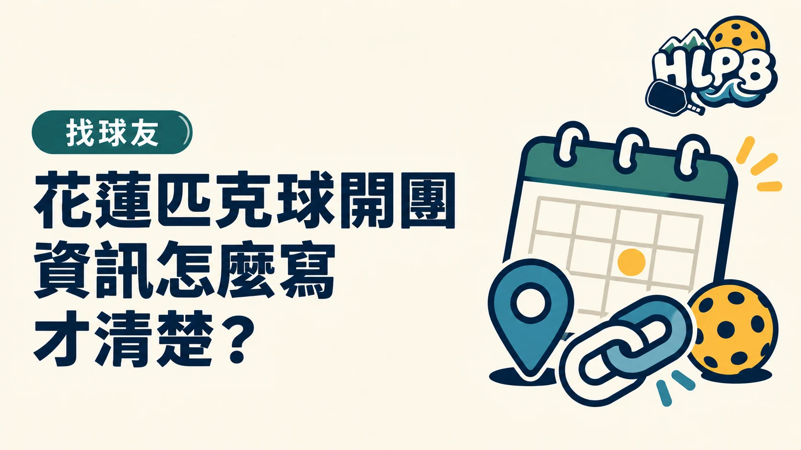

開團連結只是入口，不能代替球友判斷是否適合參加所需的資訊。把場次條件寫清楚，可以減少反覆詢問，也能避免加群後才發現日期、程度或費用不合。
一份場次資訊應包含什麼？
| 欄位 | 球友需要知道的內容 |
|---|---|
| 日期、起訖時間 | 能否配合及何時到場 |
| 地點與集合方式 | 實際去哪裡、向誰確認 |
| 程度與人數 | 是否適合及是否尚有名額 |
| 費用與器材 | 支出及要帶什麼 |
| 報名與取消方式 | 如何確認成功、不能到怎麼通知 |
上述是 HLPB 資訊編排建議。沒有確認的條件就標示待確認，不把空白欄位寫成不限、免費或現場都能借用。
群組入口和場次報名要分開
加入群組通常是為了取得聯絡與消息；是否已報名當天場次，要另看公告。建議把兩種連結清楚命名，不讓讀者點了加入群組後，以為名額已自動保留。
更新時，讓大家知道哪裡改了
日期、地點或名額變更，集中更新同一份公告並標示最新狀態。不要只在長串留言補一句，讓後來加入的人仍依舊版出發。
校園或預約場地另應說明已安排的進場方式，但不需要在每份公告複製整篇使用辦法；把必要資訊與完整來源連結放好即可。
延伸閱讀：臨打表單送出了，就算報名成功嗎？、花蓮匹克球臨打額滿了，候補怎麼問？。
資料來源：HLPB 揪打球入口、HLPB 花蓮球場資料。
內容更新：2026-10-20｜資料來源：HLPB 本站資料；HLPB 本站資料
返回文章列表